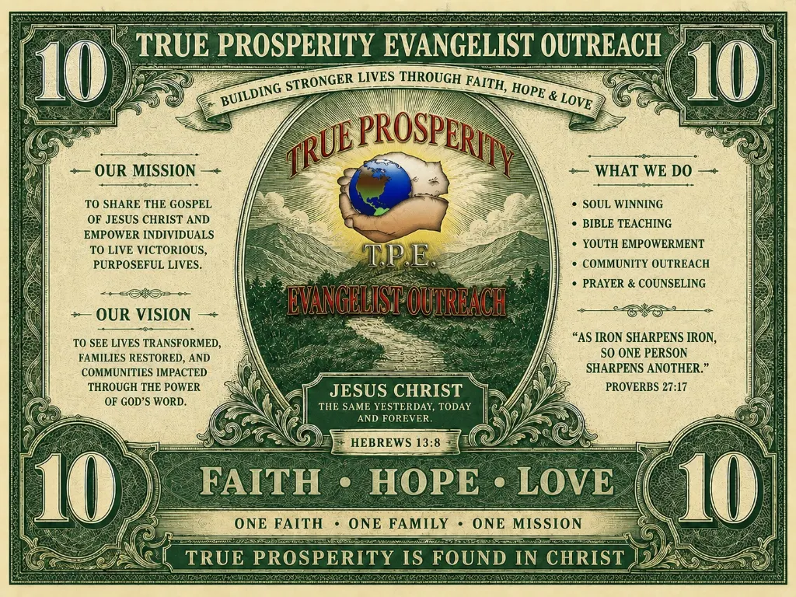

Food & a warm meal
A full-time feeding mission and food pantry help meet immediate needs with dignity.
True Prosperity Evangelist Outreach serves the Tampa community through practical assistance, spiritual care, and connection.
A full-time feeding mission and food pantry help meet immediate needs with dignity.
The clothing closet offers practical support for individuals and families.
Encouragement and preparation help people take steps toward greater stability.
AA/NA and transitional-housing referrals help connect people with additional resources.
Bible teaching, prayer, counseling, and spiritual guidance are at the heart of the ministry.
Street outreach and soul winning bring a message of faith, hope, and care into the community.
Ask about current outreach opportunities, support a community effort, or share a prayer request.
Contact the ministry